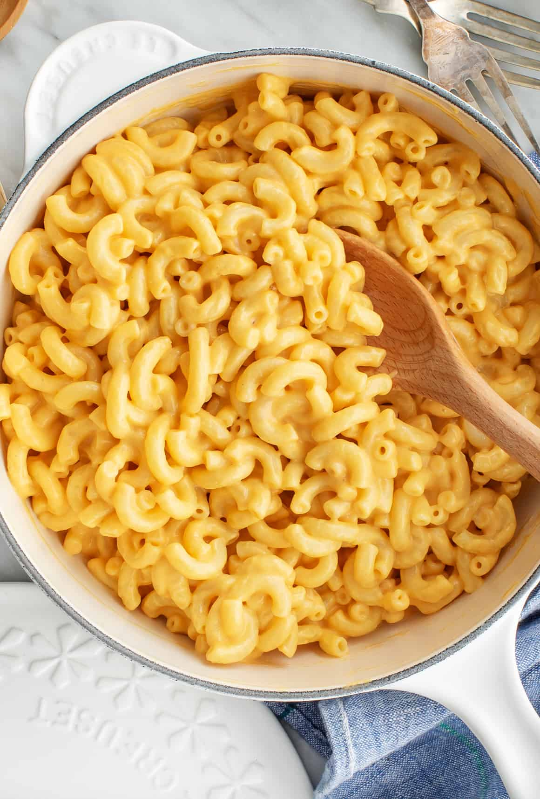

Mac and Cheese

Heres the big cheese!
I'm pretty sure that most adults love a great homemade macaroni and cheese recipe just as much as our
kids do! My kids will enjoy a box of Kraft macaroni and day, but everyone gets especially excited
when I make this homemade mac and cheese, and for good reason!
Ingredients
- 1/2 lb uncooked elbow macaroni , about 1 ½ cups
- 3 tablespoons butter
- 2 Tablespoons all-purpose flour
- 1/2 teaspoon salt
- 1/8 teaspoon ground black pepper
- 1 1/2 cups milk , any kind
- 3/4 cup half and half
- 2 1/2 cups shredded cheddar cheese
Step-By-Step
- Preheat the oven: to 325 degrees F and lightly grease an 8' square (or similar size) baking dish.
- Cook the macaroni: to al dente, according to package instructions. Drain and set aside.
- Make the sauce: Melt the butter in a medium saucepan over medium heat. Blend in the flour, salt, and pepper.
Cook for 2 minutes. Slowly add the milk and half and half, stirring constantly, and cook over medium-low heat for a
few minutes until the mixture has thickened like the consistency of gravy, about 5-7 minutes. Remove from heat and stir
in 1 cup shredded cheese, stirring just until melted.
- Combine: Add the cooked macaroni noodles and toss to coat. Pour half or the pasta mixture into the
prepared baking dish. Sprinkle ½ cup cheese over the top. Add remaining pasta and sprinkle with remaining cheese.
- Bake: for 15-20 minutes or until cheese is melted on top.